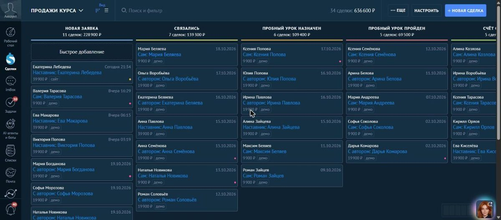
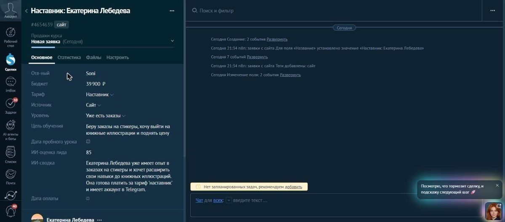
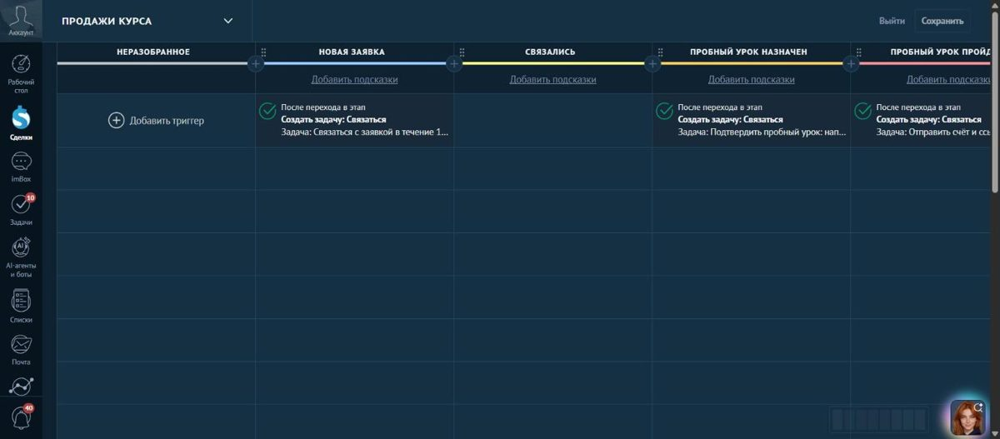

Сони Фридмо, 3 года в IT. Внедряю amoCRM и Битрикс24 и связываю их с оплатами, 1С, сайтом и мессенджерами. Могу брать задачи, когда у вашей команды завал, или работать у вас постоянно на удалёнке.
Четыре компании продавали вручную: счёт и ссылку на оплату готовили часами, а бухгалтерия сверяла платежи вручную. Я перевёл их продажи в CRM и связал её с эквайрингом, онлайн-кассой и 1С.
Мой проект внедрения для онлайн-школы, на демо-данных: заявка с сайта сама попадает в воронку, ИИ оценивает лид и пишет сводку менеджеру.


